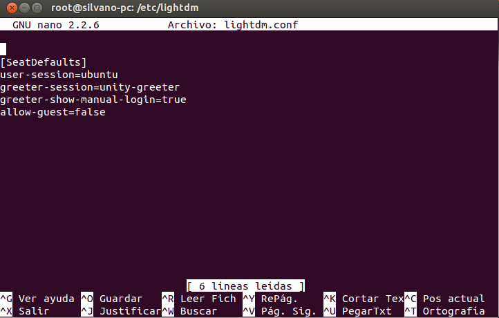
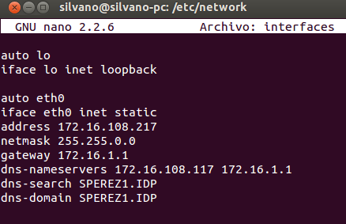
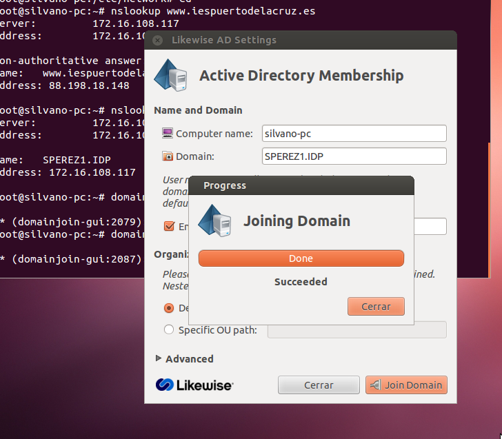
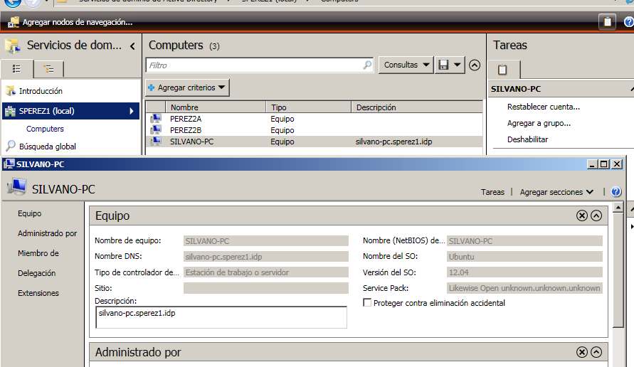
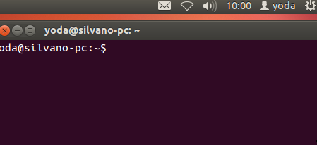

- Módulo: Sistemas Operativos
- Título del trabajo Clientes de Dominio
- Componentes del grupo: Silvano Pérez Yanes
- Curso Académico: 2013/2014
- Fecha de entrega: 2 de Junio de 2014
En esta práctica vamos a unir una maquina ubuntu al dominio de windows server 2008, usando la herramienta de ubuntu likewise.
Antes de poder acceder a otro usuario en la maquina vitual ubuntu, primero hay que configurar un archivo de configuración, para poder acceder a otro usuario, dandonos la posibilidad de escribir al usuario el cuál queremos acceder.
Para poder unirnos al dominio de windows server, primero hay que configurar el fichero de configuración de las interfaces, configurando la interfaz deseada en modo estático, en el definimos los DNS que serán los de windows server y de FRY.
En este paso, habra que unir la maquina ubuntu al dominio de windows server.
Probamos ha acceder al dominio con la herramienta likewise, en modo gráfico, y comprobamos que funciona.
En esta imagen, comprobamos que el PDC reconoce al cien por cien la maquina ubuntu, que esta unida al dominio.
Probamos ha acceder con cualquier usuario de dominio del windows server para ver que funciona todos los cambios y configuraciones realizadas.
